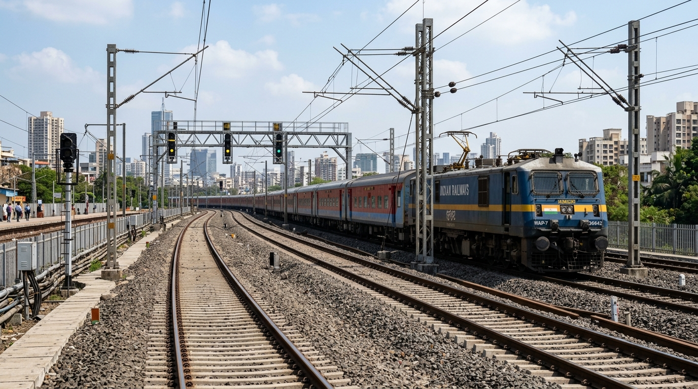
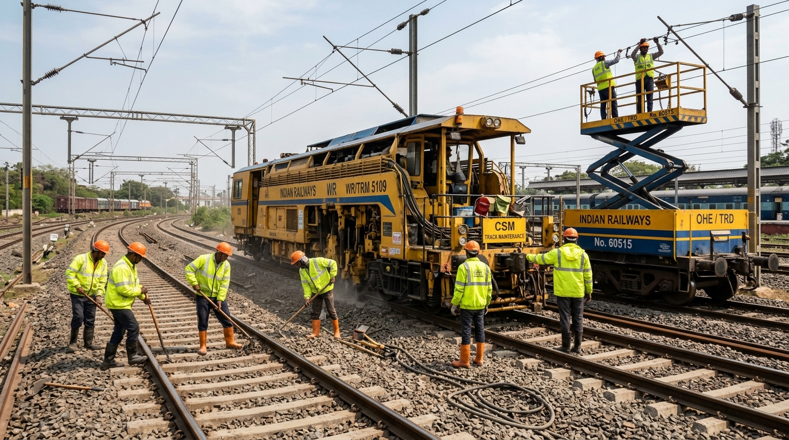

CRIS COA SPEC
Corridor Time-Distance String Chart (UP Fast Line)
Section: CSMT (KM 0.0) → Dadar (KM 9.0) → Thane (KM 34.0) → Kalyan (KM 54.0)
Interactive:

📷 LIVE FEED: CSMT-DADAR UP FAST
25kV OHE Catenary & Track Corridor
WAP-7 #36642 on Up Fast Line (Clear Track)

⚡ ACTIVE SHADOW BLOCK #BLK-0906-01
85m Saved (38.4%)
🛠️ CSM Tamping + 25kV OHE TRD Scissor Tower Wagon
Location: TC-03 Dadar • S&T, Civil & Electrical Joint Crew
🌐 3D QUADRUPLED CORRIDOR TWIN (CSMT → KALYAN 54 KM)
● 4 ACTIVE TRAIN CAPSULES • 1 NOCTURNAL SHADOW BLOCK
🖱️ Orbit: Drag • Zoom: Scroll • Real-time CP-SAT Scheduled Corridor
⚡ Solver: Google OR-Tools CP-SAT (184ms)
📋 Demand Queue
Co-location Candidate Tasks
P1 CRITICAL • TMS
Req: 180m
TMS-804: Rail Transverse Fracture (IMR Flaw)
Location: TC-03 Dadar (KM 9/2) • Machine: CSM #98
Bundled with TDMS-312
P2 SCHEDULED • TDMS
Req: 150m
TDMS-312: 25kV OHE Catenary De-energization
Location: TC-03 Dadar • Tower Wagon #14
Buffer: 10m Earthing
Silos: TMS + TDMS + SMMS
Track Map →